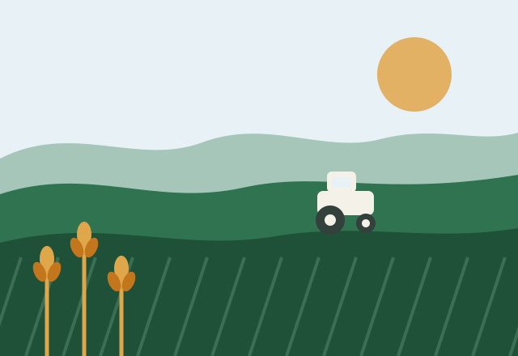
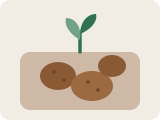
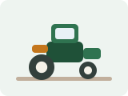

Farmer records
Keep names, villages, land size and main crop for every farmer in the cluster, with photographs and contact numbers.
Agriculture & farmer management
Manage farmers, crops, equipment and agricultural resources in one place. Kisan Mitra replaces the stack of registers a block office keeps with a single, readable interface.
124
Farmers on record
48
Crop entries
16
Machines tracked

A field officer visits a village, notes down who sowed what, which pump set broke, and how much urea is left. That information usually ends up in three different registers and one WhatsApp group.
Kisan Mitra puts those records on screens that follow the same pattern: a heading, the numbers that matter, and a list you can scan. Farmers get the same information about their own land, crops and nearby supplies.
Six modules, all reachable from the same navigation.
Keep names, villages, land size and main crop for every farmer in the cluster, with photographs and contact numbers.
Track which crop is sown where, the season it belongs to, and how much area is under it right now.
Know which tractor, harvester or sprayer is free, in use or waiting for service before anyone asks.
Browse seeds, fertilisers, pesticides and tools with prices in one catalogue instead of five price lists.
See crop share, monthly production and farmer growth without opening a single register.
Short, practical guidance on irrigation, soil health and seasonal planning, written for daily use.
The crops, machinery and inputs this cluster works with most.
Wheat, rice and maize — the crops that cover most of the land in this cluster.

Potato and other short-duration crops grown between main seasons.

Tractors, harvesters, seed drills and sprayers shared across villages.
Seeds, fertilisers, pesticides and irrigation kits at listed prices.
Four reasons this is worth the switch from paper registers.
Land size, main crop, village and contact number stay together, so nobody has to match three registers to answer one question.
Equipment status is written down where the whole block can see it, which cuts the phone calls before every sowing week.
The same screens work on a field officer's phone and on the office desktop — no separate mobile version to maintain.
The interface is structured so JavaScript in Phase 2 and React in Phase 3 can be added without redesigning anything.
Create an account as a farmer or as management staff, then open the dashboard to see how records, crops and equipment fit together.